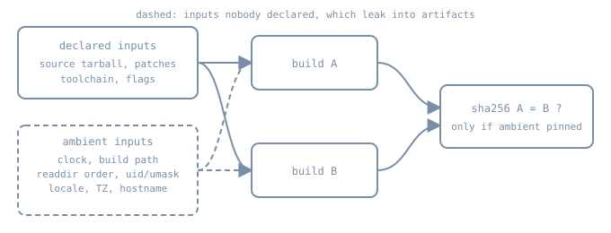

Reproducible Builds and Determinism
Reproducible Builds and Determinism
The Reproducible Builds project calls a build reproducible when, given the same source code, build environment and build instructions, any party can recreate bit-by-bit identical copies of all specified artifacts. For a distribution, the artifacts are the packages you ship, and “identical” is checked with a cryptographic hash.
This chapter stays at the level of one package recipe: what makes two builds of the same source differ, and how a recipe removes each difference. Running rebuilders and verifying a whole archive belong to the build-infrastructure chapters later in the book.

What reproducibility buys, and what it doesn’t
If your build farm and an independent rebuilder produce the same hash from the same tagged source, then a compromised build node could not have slipped something into the binary without also changing the source. Changing the source is the far more visible attack. Reproducibility also gives you cheap diffs between releases (an unchanged package hashes the same), debuggable regressions, and confidence that a rebuild after a disaster yields the artifacts you already signed.
It does not prove the source is benign, and it does not rule out a compromised toolchain shared by both builders. Both builders would reproduce the same backdoor. That deeper problem is the subject of bootstrappable builds. Reproducibility narrows trust from “whoever ran the build” to “the source and the toolchain”.
Lab setup: a tiny package built twice
Everything below was run for this chapter on a Debian-based box with GCC 14.2.0, GNU tar 1.35, gzip 1.13 and GNU binutils 2.44, as an ordinary user without root. The “package” is one program and one static library:
/* src/hello.c */
#include <stdio.h>
int main(void)
{
printf("hello 1.0, built %s %s from %s\n", __DATE__, __TIME__, __FILE__);
return 0;
}/* src/util.c */
int util_answer(void) { return 42; }A naive recipe, of the kind many upstream Makefiles amount to:
#!/bin/sh
# build-naive.sh WORKDIR OUT.tar.gz
set -eu
work=$1; out=$2
rm -rf "$work"; mkdir -p "$work/pkg/usr/bin" "$work/pkg/usr/lib"
cp src/*.c "$work/"
cd "$work"
gcc -g -O2 -c util.c -o util.o
ar rc libutil.a util.o
gcc -g -O2 "$PWD/hello.c" -o pkg/usr/bin/hello
cp libutil.a pkg/usr/lib/
tar -C pkg -czf "$out" .Build it as “Alice” and, two seconds later, as “CI” in a different directory:
./build-naive.sh /tmp/rb/alice "$PWD/naive-a.tar.gz"; sleep 2
./build-naive.sh /tmp/rb/bob-ci "$PWD/naive-b.tar.gz"
sha256sum naive-*.tar.gz8f6f2de958f916397433936371a031a0bd000b396c0545aad9ab7ccf9a9ead43 naive-a.tar.gz
be2f6f9b69e095fa8d0f55127f942b3325d216ea4259018378416416e2e84106 naive-b.tar.gzThe source is the same, but the hashes are not. The binaries show two leaks straight away:
$ /tmp/rb/alice/pkg/usr/bin/hello
hello 1.0, built Oct 31 2026 08:57:58 from /tmp/rb/alice/hello.c
$ /tmp/rb/bob-ci/pkg/usr/bin/hello
hello 1.0, built Oct 31 2026 08:58:00 from /tmp/rb/bob-ci/hello.cThe tarball shows more:
$ tar -tvzf naive-a.tar.gz --full-time
drwxr-xr-x box/box 0 2026-10-31 08:57:58 ./
drwxr-xr-x box/box 0 2026-10-31 08:57:58 ./usr/
drwxr-xr-x box/box 0 2026-10-31 08:57:58 ./usr/bin/
-rwxr-xr-x box/box 17272 2026-10-31 08:57:58 ./usr/bin/hello
drwxr-xr-x box/box 0 2026-10-31 08:57:58 ./usr/lib/
-rw-r--r-- box/box 2780 2026-10-31 08:57:58 ./usr/lib/libutil.aThe archive records the build time and the builder’s user and group names. The member order is whatever readdir() returned, which happens to look sorted here but depends on the file system.
The usual sources of nondeterminism
1. The clock: SOURCE_DATE_EPOCH
Timestamps get into artifacts through __DATE__/__TIME__, archive member mtimes, generated documentation, and “built on” banners. The fix is not to stop recording time but to record a chosen time. The SOURCE_DATE_EPOCH specification defines an environment variable holding a Unix timestamp (integer seconds, UTC). Tools that would embed “now” use that value instead.
The recipe chooses the value from the source, not from the build machine. Common choices are the commit time of the release tag (git log -1 --pretty=%ct) or the date of the latest changelog entry, which is what Debian’s tooling uses. Either way it is the same for every builder of that version.
GCC honours SOURCE_DATE_EPOCH for __DATE__ and __TIME__ (GCC environment variables). GNU tar does not read it implicitly; you pass it with --mtime.
2. The build path: -ffile-prefix-map
__FILE__ and the DWARF debug information record the absolute path where the build ran. With the clock already pinned, building the same file in two directories still gives different binaries, and even different build IDs:
$ export SOURCE_DATE_EPOCH=1793318400
$ # same hello.c, compiled in ./p1 and ./longer-path-2 with: gcc -g -O2 "$PWD/hello.c" -o hello
$ sha256sum p1/hello longer-path-2/hello
bbd55c54b9e96a88474df615683c66a714f8c0b15bc9d1fc274796a1a6eff3ea p1/hello
e73f73a9af39ef7236f69a7d911bc4ee2a565b2e96099d86db7c47bb908bb942 longer-path-2/hello
$ readelf -n p1/hello | grep "Build ID"; readelf -n longer-path-2/hello | grep "Build ID"
Build ID: 2f9ed4f258a0d25adbcf5e65aa0b32faafe7f784
Build ID: b55910bc18ff9900f67b6b8bb5b458d74630eda1GCC’s -ffile-prefix-map=OLD=NEW rewrites the prefix in both __FILE__-style macros and debug info. It is equivalent to giving all the individual -f*-prefix-map options, including -fmacro-prefix-map and -fdebug-prefix-map. Map the build directory to a canonical path, conventionally under /usr/src/ or /usr/src/debug/:
$ # same, with -ffile-prefix-map=$PWD=/usr/src/hello-1.0
$ sha256sum p1/hello longer-path-2/hello
63c7a2584b19d3c990651db04085d5b9de8b42acb3c9a49349b56d049bfdbb01 p1/hello
63c7a2584b19d3c990651db04085d5b9de8b42acb3c9a49349b56d049bfdbb01 longer-path-2/helloThe build ID is a hash computed over the linked output, so once the bytes agree it agrees too. That matters later, because debug-symbol servers look files up by build ID.
3. Archive metadata: tar, gzip and ar
Each archive format carries metadata about the build machine:
| Format | Leaks | Fix |
|---|---|---|
| tar | member mtime, owner and group names and IDs, mode affected by umask, member order | --sort=name, --mtime=@$SOURCE_DATE_EPOCH --clamp-mtime, --owner=0 --group=0 --numeric-owner, a fixed umask in the recipe, and a pinned --format |
| gzip | original file name and mtime in the header when compressing a named file | gzip -n |
ar (.a) |
member mtime, uid, gid, mode | ar D (deterministic mode) |
The gzip header is easy to check directly. Compressing a named file records its name and mtime; -n drops both:
$ touch -d @1700000000 notes.txt; gzip -kf notes.txt # header: mtime 1700000000, FNAME flag set, name b'notes.txt'
$ gzip -kfn notes.txt # header: mtime 0, flags 0In the naive recipe, tar -z compresses a pipe, so the gzip header already had mtime 0. Recipes that run gzip file.tar afterwards do not get that for free.
For ar, Debian and many other distributions build binutils with deterministic archives as the default, and binutils 2.44 also uses SOURCE_DATE_EPOCH when told to keep real values. Write D anyway, so the recipe doesn’t depend on how the toolchain was configured:
$ ar rcU u.a src/util.c; ar tv u.a # U: keep real metadata (here with SOURCE_DATE_EPOCH set)
rw-r--r-- 1000/1000 37 Oct 30 00:00 2026 util.c
$ ar rcD d.a src/util.c; ar tv d.a # D: zero uid/gid/mtime
rw-r--r-- 0/0 37 Jan 1 00:00 1970 util.c--clamp-mtime only lowers mtimes newer than --mtime. Files whose real mtime is older, such as files unpacked unchanged from the upstream tarball, keep their own timestamps. Those come from the source, so they are the same for every builder. See the GNU tar manual on --mtime and the reproducible-builds archive notes.
4. Ordering, locale and environment
- Directory order.
readdir()returns entries in file-system order. Build scripts that glob*.cand link in that order, or generators that iterate a directory, can produce different output on ext4 and on Btrfs. Sort explicitly (LC_ALL=C sort,tar --sort=name). - Locale and time zone.
sort, date formatting and some generators depend onLC_ALL,LANGandTZ. PinLC_ALL=CandTZ=UTCin the recipe. - Randomness and hashing. Some compilers and languages randomise symbol names, hash-table iteration order or temporary names. GCC’s
-frandom-seed=STRINGfixes the seed for the few places GCC uses one, which mainly matters with-flto. Python bytecode, Java archives and documentation generators each have their own knobs, collected in the reproducible-builds documentation. - Parallelism. A parallel make that appends to one archive or generated file can interleave in a different order on every run.
- Host identity. Hostname, user name, kernel version and CPU count end up in “built by” strings and in
config.logfiles that get packaged by mistake.
The fixed recipe
#!/bin/sh
# build-repro.sh WORKDIR OUT.tar.gz (needs SOURCE_DATE_EPOCH)
set -eu
: "${SOURCE_DATE_EPOCH:?set SOURCE_DATE_EPOCH}"
export LC_ALL=C TZ=UTC
umask 022
work=$1; out=$2
rm -rf "$work"; mkdir -p "$work/pkg/usr/bin" "$work/pkg/usr/lib"
cp src/*.c "$work/"
cd "$work"
CFLAGS="-g -O2 -ffile-prefix-map=$PWD=/usr/src/hello-1.0"
gcc $CFLAGS -c util.c -o util.o
ar rcD libutil.a util.o
gcc $CFLAGS "$PWD/hello.c" -o pkg/usr/bin/hello
cp libutil.a pkg/usr/lib/
tar -C pkg --sort=name --format=gnu \
--mtime="@$SOURCE_DATE_EPOCH" --clamp-mtime \
--owner=0 --group=0 --numeric-owner \
-cf - . | gzip -9n > "$out"Run it in two directories, two seconds apart, with the second caller’s umask deliberately different:
$ export SOURCE_DATE_EPOCH=1793318400 # 2026-10-30 00:00:00 UTC
$ ./build-repro.sh /tmp/rb/alice "$PWD/repro-a.tar.gz"; sleep 2
$ (umask 077; ./build-repro.sh /tmp/rb/bob-ci "$PWD/repro-b.tar.gz")
$ sha256sum repro-*.tar.gz
f9ee5dad73817d6c28be922dd2afb2956759f1c600f6e355e3d3db8dc1b4e71b repro-a.tar.gz
f9ee5dad73817d6c28be922dd2afb2956759f1c600f6e355e3d3db8dc1b4e71b repro-b.tar.gz
$ TZ=UTC tar -tvzf repro-a.tar.gz --full-time | head -n 2
drwxr-xr-x 0/0 0 2026-10-30 00:00:00 ./
drwxr-xr-x 0/0 0 2026-10-30 00:00:00 ./usr/
$ /tmp/rb/alice/pkg/usr/bin/hello
hello 1.0, built Oct 30 2026 00:00:00 from /usr/src/hello-1.0/hello.cBoth builders now produce the same hash. The program still reports a build date, and now it is the release’s date rather than the builder’s.
Verifying a recipe
The proof that a recipe is reproducible is two builds that vary everything the recipe claims not to depend on, followed by a hash comparison. A useful minimum set of variations is different directories, different times, different umask, and, if you can, a different user, hostname, time zone, locale, CPU count and file system. Debian’s reprotest automates exactly this, and diffoscope explains where two artifacts differ, recursing into archives, ELF sections and compressed members. Neither was installed on the box used for this chapter, so their output is not shown. cmp, tar -tv --full-time, readelf and strings were enough for this small example.
When hashes differ, work from the outside in. Compare the archive listing first (metadata, order), then the extracted files’ hashes to find the differing file, then that file’s sections (readelf -S, objdump -s -j .comment), and finally the source of the leak in the build log.
Practice
- Remove
--sort=namefrom the fixed recipe and build into a directory on a different file system type (a tmpfs, for example). Does the hash change? Explain why it might not on your machine and still be a bug. - Add a
BUILD_HOSTstring tohello.cwith-DBUILD_HOST="\"$(hostname)\"". Build reproducibly as two users with different hostnames in containers, and fix it without deleting the feature. - Change the recipe to take
SOURCE_DATE_EPOCHfrom the last commit that touchedsrc/, and reason about what happens when you rebuild an older tag. - Build with
-fltoand compare. If the outputs differ, find out whether-frandom-seedfixes it with your compiler version.
Recall card
- Reproducible means the same source, environment and instructions give bit-identical artifacts, which any party can check.
- Pin the clock with
SOURCE_DATE_EPOCH, chosen from the source and not the builder. - Hide the build path with
-ffile-prefix-map=$PWD=/usr/src/NAME-VER. - Normalise archives with
tar --sort=name --mtime --clamp-mtime --owner=0 --group=0 --numeric-owner,gzip -nandar D. - Pin
LC_ALL,TZandumask, and sort anything read from a directory. - Verify by varying the environment and comparing hashes. Explain any difference with diffoscope.
Sources
- Reproducible Builds, definition,
SOURCE_DATE_EPOCHspecification, archive metadata and build path notes - GCC manual, environment variables and overall options (
-ffile-prefix-map), plus developer options (-frandom-seed) - GNU tar manual, overriding file metadata
- GNU binutils,
armodifiers (D,U) - gzip manual, invoking gzip (
-n)